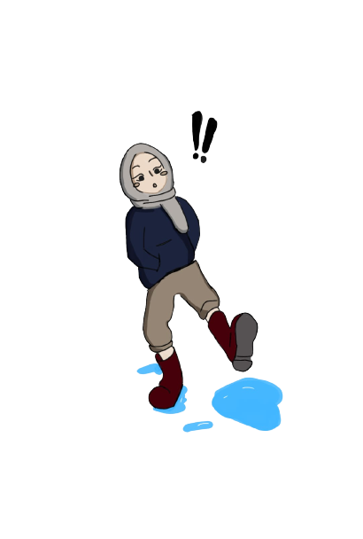
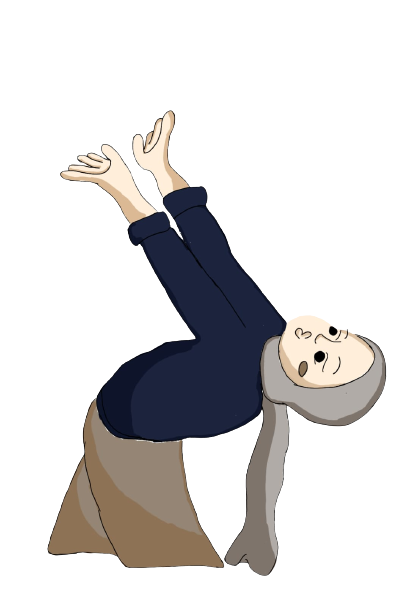
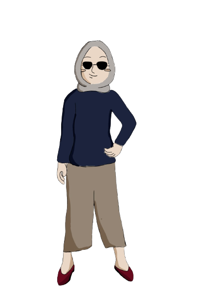
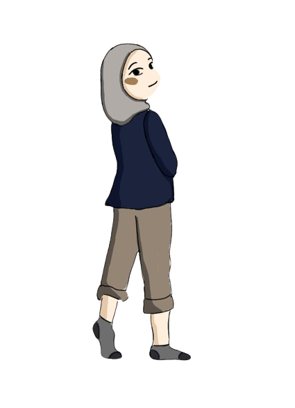
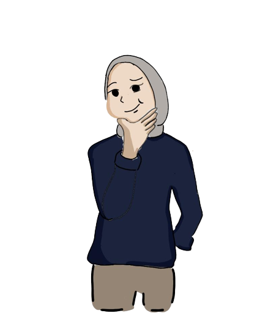

|  |
Riwayat pendidikan
Untuk riwayat pendidikan, SMP saya dari SMP Barunawati Surabaya.
lalu setelah lulus saya mengambil sekolah kejuruan di SMK Kawung 1 Surabaya dengan mengambi jurusan RPL.
tetapi jurusan yang ingin saya ambil adalah desain animasi, dan saat itu saya tidak lolos karna niai saya kurang
jadi saya mengambil sekolah di SMK Kawung 1 dengan jurusan RPL karna di jurusan itu mempelajari tentang desain grafisS.
|
Hobi
Saya punya beberapa hoby, dari mengambar, membuat desain, baca novel, masak atau bikin kue.
saya juga perna membuat beberapa program yaitu
>>pembayaran spp,
>>pembelian tiket online,
>>pengaduan masyarakat,
>>juga perna membuat artikel tentang makanan, dan informasi belajar.
|
 |
|  |
Pengalaman
Saya perna magang di HI TECH MALL Surabaya selama 3 bulan di sana saya belajar tentang rakitan, install, dan service.
Di sana saya belajar cukup banyak, dan saya juga tau bagai mana cara cara melihat speck labtob, bagai mana mengetau i lapasitas ram dll
Saya lebih menyukai habasa HTML, karna lebih mudah untuk di pahami, di mengerti,
dan juga kita segabai pengguna bisa lebih bebas untuk membuat program atau sebuah halaman web.
|
Pengalaman suka duka
Untuk pengalaman Suka :
>> Dikampus saya dapat mengikuti pembelajaran dengan baik karna kebetulan
jurusan yang saya ambil juga sesuai dengan passion saya sehingga bisa di bilang dalam perkuliahan ini
adalah pengoktimalan diri saya.
Untuk pengalaman Duka :
>>Terkadang saya mendapatkan pressure yang cukup ketat yang di mana saya harus
mengumpulkan tugas dalam hitungan jam atau membuat web dalam waktu yang singkat namun seara tidak langsung
hal tersebut juga menambah skil saya untuk melatih kecekatan saya dalam membuat tugas.
|
 |
|  |
Kesan pertama
masuk UNIVERSITAS Trunojoyo Madura
Kesan pertama saya cukup kaget karna di UNIVERSITAS Trunojoyo Madura ini cukup banyak peminat nya,
dan juga lebih banyak mahasiswa dari luar pulau yang memilih berkuliah di Universitas Trunojoyo.
Hubungi Saya
|